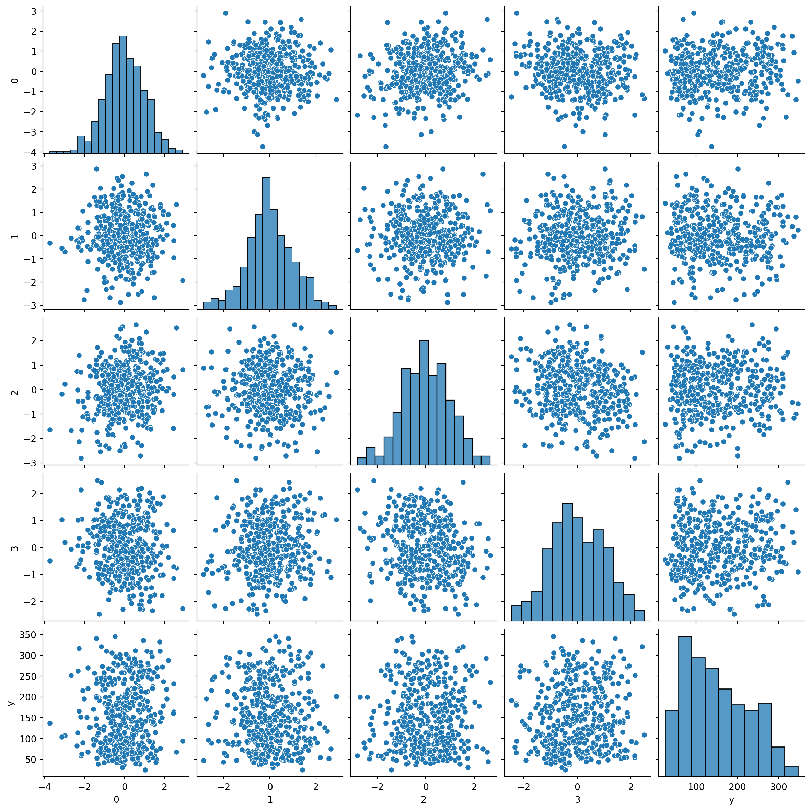
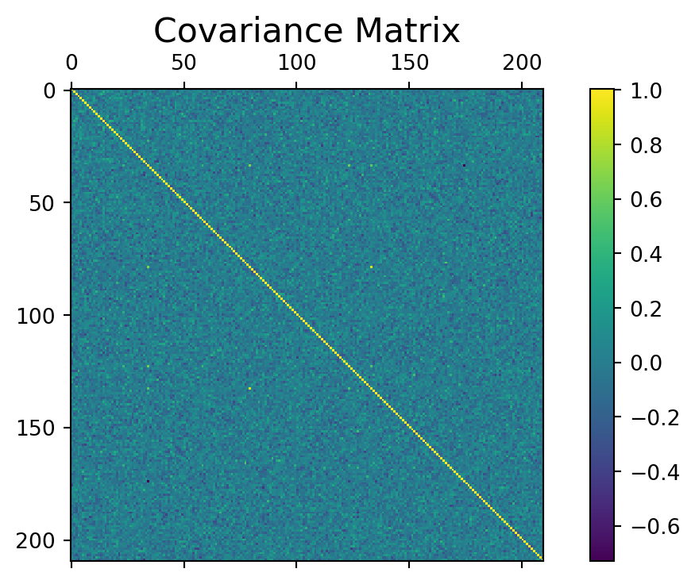
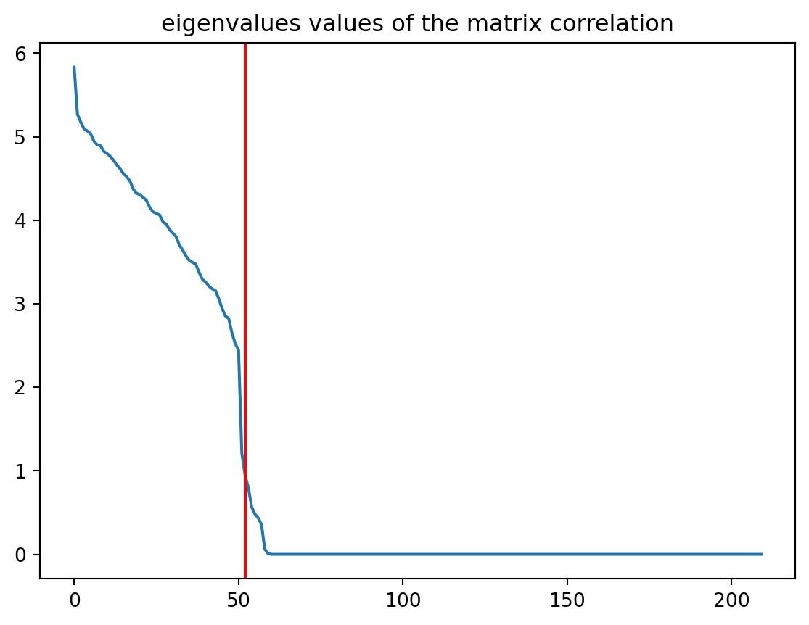
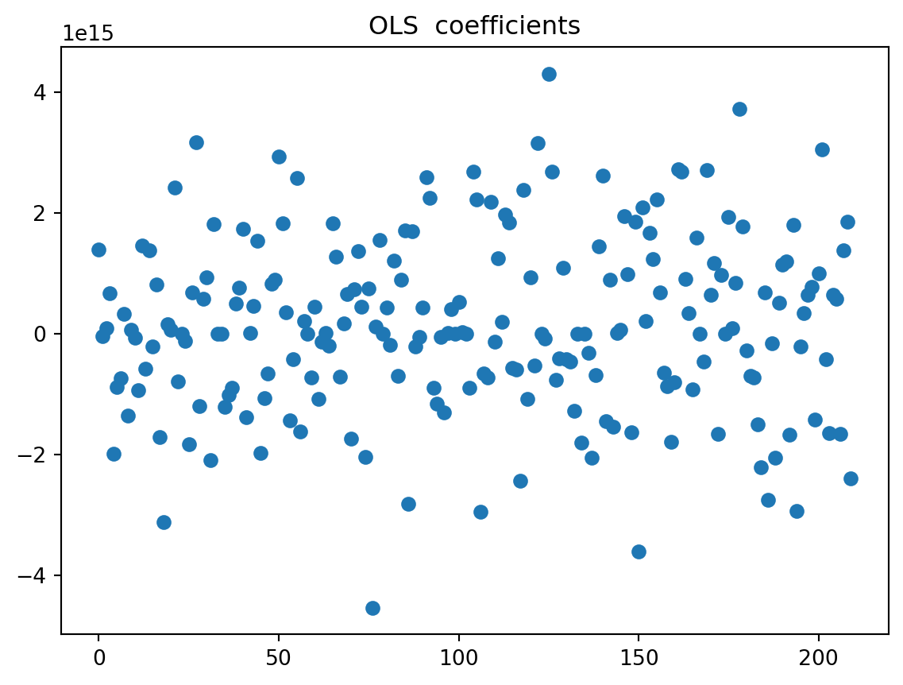
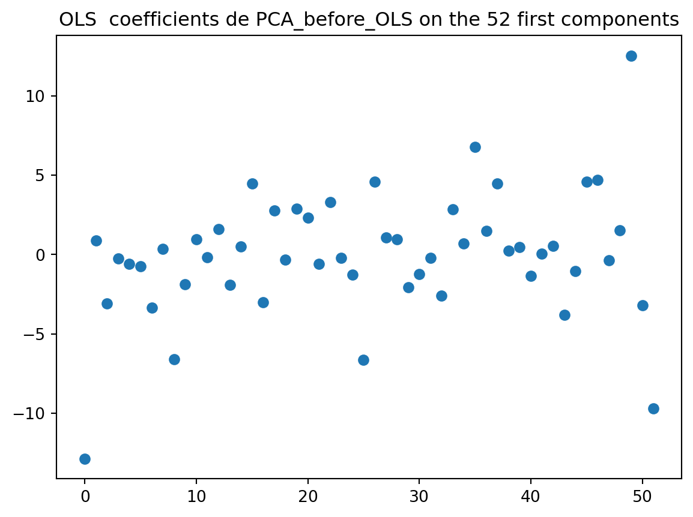
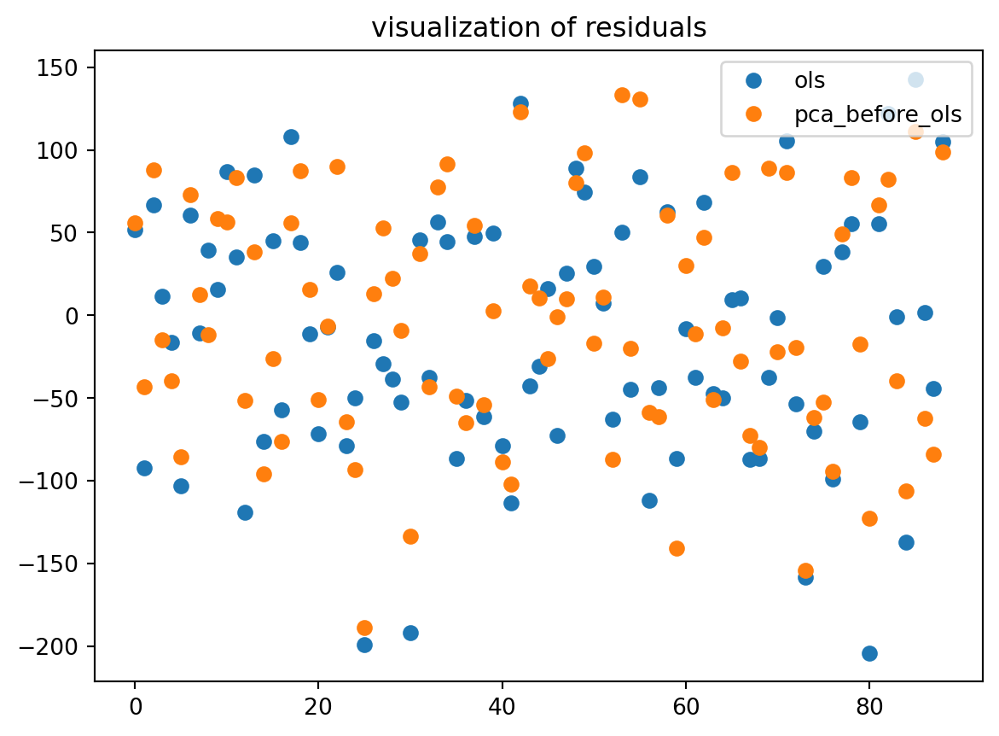
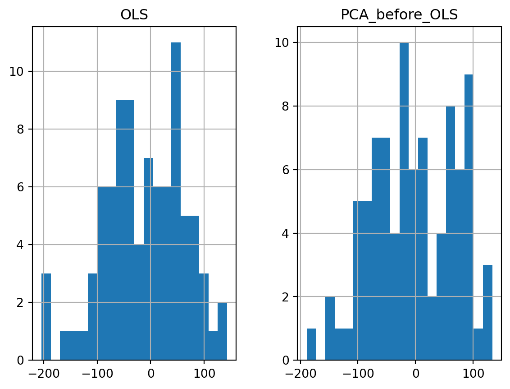

import numpy as np
import pandas as pd
from scipy.stats import norm
from sklearn import datasets
from sklearn import preprocessing
from sklearn.model_selection import train_test_split
from sklearn.preprocessing import StandardScaler
from sklearn.linear_model import LinearRegression, RidgeCV, LassoCV
import matplotlib.pyplot as plt
from matplotlib import rc
import seaborn as sns
np.random.seed(2)Ordinary Least squares variants : Ridge, PCA-OLS AND LASSO
Machine Learning
OLS-Regression
PCA
Lasso
Ridge
I will begin this post by reminder what OLS is and then I will introduce PCA-OLS, Lasso and Ridge regression.
The OLS estimator is any coefficient vector \(\hat{\theta_n}\) = \((\hat{\theta_1}\), \(\hat{\theta_2}\), …, \(\hat{\theta_p})^T\) \(\in\) \(R^p\) such that :
\[\hat{\theta_n}=argmin_{\theta \in R^p} \sum_{i=1}^{n} (y_i - x_i^T\theta)^2\]
Where \(x_i\) is the vector of features of the i-th observation and \(y_i\) is the target variable of the i-th observation.
In matrix notation, we have :
Z = \(\begin{bmatrix} x_1^T \\ x_2^T \\ ... \\ x_n^T \end{bmatrix}\), Y = \(\begin{bmatrix} y_1 \\ y_2 \\ ... \\ y_n \end{bmatrix}\), \(1_n\) = \(\begin{bmatrix} 1 \\ 1 \\ ... \\ 1 \end{bmatrix}\)
\(\hat{\theta_n}=argmin_{\theta \in R^p} ||Y - Z\theta||_2^2\)
and the OLS estimator is defined by the normal equation :
\[Z^TZ\hat{\theta_n} = Z^TY\]
Note that solution of this equation is not unique without further assumptions on the data.
For instance, if \(u \in Ker(Z)\), then \(\hat{\theta_n} + u\) is also a solution of the normal equation.
The solution will be unique if only \(Ker(Z)\) = Ker(\(Z^TZ\)) = \({0}\) which is equivalent to \(Z^TZ\) being invertible and this is the case if \(Z\) has full column rank. The solution is then given by :
\[\hat{\theta_n} = (Z^TZ)^{-1}Z^TY\]
If \(Ker(Z) \neq {0}\), then the OLS estimator is not unique. In this case, the set of solutions writes \(\hat{\theta_n} + Ker(Z)\) where \(\hat{\theta_n}\) is the particular solution given by the normal equation.
There are four cases where you should not use OLS estimator : When we have ill-conditionning, multicollinearity, more variables that samples, and when the model overfit.
Ill-Conditioning. When ker(Z) = {0} (i.e. the OLS estimator is unique) but the determinant of ZTZ is close to zero, the matrix \(Z^TZ\) is said to be ill-conditioned. In such a case you may encounter numerical errors when trying to compute the OLS solution. Since this involves solving a linear system, a typical fix is to add adiagonal matrix (with small amplitude) to \(Z^TZ\) to make it invertible which actually corresponds to adding the L2 norm of the coefficients as we will see below.
Multicollinearity. When ker(Z) ≠ {0}, the OLS estimator is not unique. This is typically due to multicollinearity in the data. In this case, the OLS estimator is not stable and small changes in the data can lead to large changes in the OLS estimator. This is where Lasso and Ridge regression come into play.
More variables than samples. When \(n<d + 1\), we immediately have \(ker(Z) = {0}\) and then the OLS solution is not unique. But we still may be interested in a specific unique solution.
Controlling overfitting. Even in the favorable case \(ker(Z) = {0}\) but when you include higher-order polynomials of the original features in the vector (zi) (or if the initial features are strongly correlated), the OLS predictor may tend to overfit the data. If you have a look at the values of the coefficients in the solution \(\hat{\theta_n}\) obtained in such a case, you will observe that they may have a very large absolute value. Imposing a constraint on their L2 norm thus tends to lessen overfitting.
There are many ways to overcome the issues mentioned above. The PCA before OLS is one of the most common ways to deal with multicollinearity. The other way is to use Lasso and Ridge regression.
1 The PCA-OLS
The PCA-OLS is a method that consists in applying PCA to the features to reduce the dimension of the data and then apply OLS to the reduced data. This method is useful when the number of features is large compared to the number of samples and when the features are correlated.
2 The Ridge Regression
The ridge regression is defined as follows : \[\hat{\theta_n}^{ridge} = argmin_{\theta \in R^p} \sum_{i=1}^{n} (y_i - x_i^T\theta)^2 + \lambda ||\theta||_2^2\]
Where \(\lambda\) is the regularization parameter.
3 The Lasso Regression
The Lasso regression is defined as follows : \[\hat{\theta_n}^{lasso} = argmin_{\theta \in R^p} \sum_{i=1}^{n} (y_i - x_i^T\theta)^2 + \lambda ||\theta||_1\]
Where \(\lambda\) is the regularization parameter.
4 Implementation in Python
We work with the data set diabetes accessible in python. The initial data consists of n = 442 patients and p = 10 covariates. The output variable Y is a score reflecting the disease progressing. For fun, a bad robot has contaminated the data set by adding 200 inappropriate exploratory variables. Since simply noising the data was not sufficient for the robot, he also arbitrarily permuted the variables. To complete the picture, the robot has erased any trace of his villainous act and thus we do not know which variables are relevant. The new data set contains n = 442 patients and p = 210 covariates denoted by X. Are you capable to resolve the enigma created by the playful machine and retrieve the relevant variables ?
Before starting, we will split the data into a training set and a test set and we will standardize the data.
Let’s start by importing the necessary libraries and loading the data.
5 Importing the necessary libraries
6 Importation of data which the last column is the output
Provide the number of the explanatory variables and the number of the observations
df = pd.read_csv("data/data_dm3.csv", header=None)
A = np.array(df)
print(A.shape)
X = A[:, :-1] # on récupère les covariables
Y = A[:, -1] # puis l'output
n, d = X.shape
print("X dimensions are: %s x %s " % (n, d))(442, 211)
X dimensions are: 442 x 210 It is important to check if the data is well centered and normalized.
print("To ensure that means and variances are properly computed for",
"the variables,\nwe check the dimensions. It is %s with axis=0, %s with axis=1.\n"
% (len(X.mean(axis=0)) == d, len(X.mean(axis=1)) == d))
print("Are explanatory variables: \n centered? %s\n normalized? %s\n"
% (np.allclose(X.mean(axis=0), 0), np.allclose(X.std(axis=0), 1)))
print("Is the output variable: \n centered? %s\n normalized? %s"
% (np.allclose(Y.mean(axis=0), 0), np.allclose(Y.std(axis=0), 1)))To ensure that means and variances are properly computed for the variables,
we check the dimensions. It is True with axis=0, False with axis=1.
Are explanatory variables:
centered? True
normalized? True
Is the output variable:
centered? False
normalized? FalseEach variable of X is centered and normalized, but not Y.
Let’s draw the scatterplots of covariates and the output variable.
#sns.set(style="ticks")
df_sub = pd.DataFrame(X[:, np.random.choice(range(210), 4)])
df_sub['y'] = Y
sns.pairplot(df_sub)
plt.show()
The selected covariates seem to be poorly correlated with each other. The are also poorly correlated with the explanatory variable. Before starting, will split the data into a training set and a test set and we will standardize the data.
X_train, X_test, y_train, y_test = train_test_split(X, Y, test_size = 0.2,
random_state=2)
# Initialize the scaler
scaler = StandardScaler()
# Fit the scaler on the training data only
scaler.fit(X_train)
# Apply the transformation to both the training set and the test set.
X_train_scaled = scaler.transform(X_train)
X_test_scaled = scaler.transform(X_test)
n_train, _ = X_train.shape
print(X_train.shape, X_test.shape)(353, 210) (89, 210)7 PCA-OLS
First, we provide the matrix covariance for the X_train_scaled and compute the svd of the covariance matrix (here, we could as well use the classical spectral decomposition, and not the SVD):
df = pd.DataFrame(X_train_scaled)
COV = df.cov()
f = plt.figure(figsize=(8, 4))
plt.matshow(COV, fignum=f.number)
cb = plt.colorbar()
#cb.ax.tick_params(label=FALSE,labelsize=0)
plt.title('Covariance Matrix', fontsize=16)Text(0.5, 1.0, 'Covariance Matrix')
Let us compute the svd of the covariance matrix (here, we could as well use the classical spectral decomposition, and not the SVD):
U, s, V = np.linalg.svd(COV, full_matrices = True)Now, we will plot the eigenvalues to see those are significantly different of 0 and We record the index of the last non-zero eigenvalue.
fig = plt.figure()
plt.plot(s)
plt.axvline(52, c='r')
#plt.axhline(0,c='r')
plt.title("eigenvalues values of the matrix correlation")
plt.show()
We notice that only the first 60 values are (significantly) different from 0. This means that the design matrix is rank-deficient (60 < 210). Thus attempting a ‘’PCA before OLS’’ strategy is legitimate. We record the index of the last non-zero eigenvalue.
print((s[0:52]>0.05))
print(s[52]) #indice n°9 pour la dixième valeur!
elbow = 52 [ True True True True True True True True True True True True
True True True True True True True True True True True True
True True True True True True True True True True True True
True True True True True True True True True True True True
True True True True]
0.9448172106956519If we first, compute regression without PCA, we have :
7.1 OLS-Regression
We will plot the values of the calculated regression coefficients (without the intercept). On another graph, do the same with the classical least squares method.
regr0 = LinearRegression()
regr0.fit(X_train_scaled, y_train)
fig = plt.figure()
plt.plot(regr0.coef_,'o')
plt.title("OLS coefficients")
plt.show()
We observe that the coefficients are extremely large. This is due to the fact that the design matrix is rank-deficient. The OLS estimator is not stable and small changes in the data can lead to large changes in the OLS estimator. If we decide now to reduce through PCA, before compute regression, we have :
7.2 PCA before OLS
X_train_reduce = np.dot(X_train_scaled, U[:, :elbow])
X_test_reduce = np.dot(X_test_scaled, U[:, :elbow])
regr1 = LinearRegression()
regr1.fit(X_train_reduce, y_train)
fig = plt.figure()
plt.plot(regr1.coef_, 'o')
plt.title(f"OLS coefficients de PCA_before_OLS on the {elbow} first components")
plt.show()
The coefficients are now more stable. The PCA method brings some improvements compared to OLS.
7.3 Comparison of the two methods
For both methods: Plot the residuals of the prediction on the test sample. Plot their density (we can use a histogram). Calculate the coefficient of determination on the test sample. Calculate the prediction risk on the test sample.
R20 = regr0.score(X_test_scaled, y_test)
R21 = regr1.score(X_test_reduce, y_test)
def MSE(y_pred, y_true):
return np.mean((y_pred - y_true) ** 2)
# et le R2 ajusté ?
pred_error0 = MSE(regr0.predict(X_test), y_test)
pred_error1 = MSE(regr1.predict(X_test_reduce), y_test)
print("The R2 of OLS: %.3f" % R20)
print("The R2 of PCA before OLS: %.3f\n" % R21)
print("The error prediction of OLS computed on the test sample: %.2f" % pred_error0)
print("The error prediction of PCA before OLS computed on the test sample: %.2f" % pred_error1)The R2 of OLS: -0.044
The R2 of PCA before OLS: 0.044
The error prediction of OLS computed on the test sample: 100712213635840763604324319232.00
The error prediction of PCA before OLS computed on the test sample: 5281.50There are evidence that the OLS is a poor model. With a R2 = -0.044, negatif, the model is poorly fitted to the data. Even if the PCA-OLS is not good, it do better compare to the OLS.
eps0 = regr0.predict(X_test_scaled) - y_test
eps1 = regr1.predict(X_test_reduce) - y_test
x=len(eps0)
print(x)
plt.figure()
plt.plot(range(x),eps0,'o',label="ols")
plt.plot(range(x),eps1,'o', label="pca_before_ols")
plt.legend(loc=1)
plt.title("visualization of residuals")
plt.show()89
eps = pd.DataFrame(np.c_[eps0, eps1], columns=['OLS', 'PCA_before_OLS'])
eps.hist(bins=20) #histogram
plt.show()
In general, the PCA method brings some improvements compared to OLS. But it depends on the chosen (random) test sample. It can happen (but it is rare here) that PCA loses information and leads to a lower prediction.
8 LASSO
Using the lassoCV function of sklearn, choose the regularization parameter of LASSO. Give the prediction risk calculated on the test. Compare it to the others.
lasso = LassoCV()
lasso.fit(X_train_scaled, y_train)
# The estimator chose automatically its lambda:
print(lasso.alpha_)5.686623247060891pred_error_lasso = MSE(lasso.predict(X_test_scaled), y_test)print("Remind us the previous estimated risks.\n")
for method, error in zip(["ols ", "pca_before_ols", "lasso "],
[pred_error0, pred_error1, pred_error_lasso]):
print(method + " : %.2f" % error)Remind us the previous estimated risks.
ols : 100712213635840763604324319232.00
pca_before_ols : 5281.50
lasso : 3386.139 LASSO feature selection and OLS
print("Selected variables with LASSO %s " % np.sum(lasso.coef_ > 0 ))
X_train_sel_lasso = X_train_scaled[:, lasso.coef_ > 0 ]
X_test_sel_lasso = X_test_scaled[:, lasso.coef_ > 0]
regr2Lasso = LinearRegression()
regr2Lasso.fit(X_train_sel_lasso, y_train)
pred_error_LSLASSO = MSE(regr2Lasso.predict(X_test_sel_lasso), y_test)
print("MSE :\n"),
for method, error in zip(["ols ", "pca_before_ols", "lasso ", "ls_lasso "],
[pred_error0, pred_error1, pred_error_lasso, pred_error_LSLASSO]):
print(method + " : %.2f" % error)Selected variables with LASSO 8
MSE :
ols : 100712213635840763604324319232.00
pca_before_ols : 5281.50
lasso : 3386.13
ls_lasso : 3921.4110 RIDGE
ridge = RidgeCV(alphas = [.1,.2, .5, 1, 2, 5, 10, 20 , 50,100, 200, 500], cv = 10 )
ridge.fit(X_train_scaled, y_train)
ridge.alpha_ 100.0pred_error_ridge = MSE(ridge.predict(X_test), y_test)10.1 Comparison of the three methods
print("Remind us the previous estimated risks.\n")
for method, error in zip(["ols ", "pca_before_ols", "lasso ", "lslasso ", "ridge "],
[pred_error0, pred_error1, pred_error_lasso,pred_error_LSLASSO, pred_error_ridge]):
print(method + " : %.2f" % error)Remind us the previous estimated risks.
ols : 100712213635840763604324319232.00
pca_before_ols : 5281.50
lasso : 3386.13
lslasso : 3921.41
ridge : 3967.63In this document, we try to overcome all the problems that can be encountered in the OLS method. We have seen that the PCA-OLS method, the LASSO and the RIDGE can be used to improve the prediction.
Thank you for reading. I hope that it will be useful.